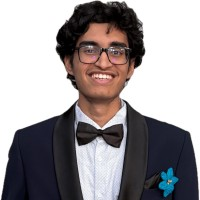

Hi, I’m Shrikara
Seems like the hardest thing to write about is yourself

# TODO: A humorous sentence that shows that I like F1, basketball, reading (fiction), music and am teaching myself the guitar.
I’m a Research Fellow at M365 Research where I work on LLM Infrastructure Optimization. Essentially, systems level optimizations to make serving LLMs more efficient. Before this, I studied CS at IIIT Hyderabad (three Is). I was part of the Software Engineering Research Center where I was advised by Dr. Karthik Vaidhyanathan and worked on MLOps, self-adaptation and LLMs for software architecture.
See Now for things I’m doing/find cool right now.